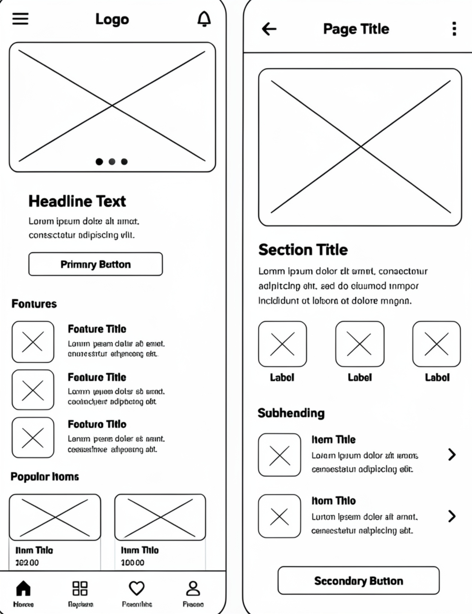
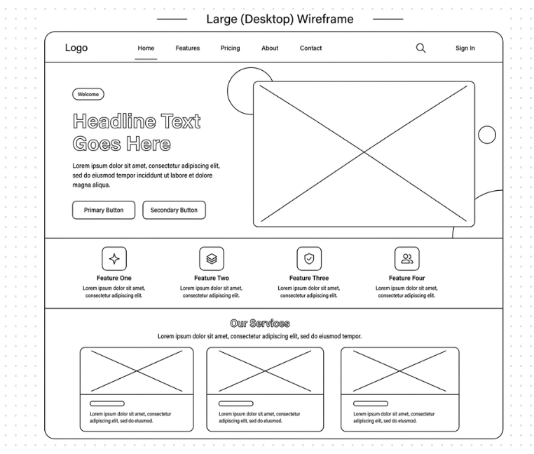

Site Name
Name: Explore Negros Portal
Reasoning: This name serves as a direct invitation for both domestic and international travelers to discover what Negros Occidental has to offer, ranging from the urban culinary attractions of Bacolod City to the surrounding provincial ecological highlights.
Site Purpose
The purpose of this website is to act as a definitive, easy-to-navigate travel directory for visitors heading to Bacolod City and Negros Occidental. It curates regional itineraries, highlights cultural landmarks like The Ruins, lists must-try culinary spots for authentic Chicken Inasal, and provides safety and transit guides for out-of-town nature destinations like Mambukal and Don Salvador Benedicto.
Target Audience Scenarios
"I only have a weekend in Bacolod City. What is the ultimate food and heritage itinerary to experience the best of the city safely and quickly?"
"What are the public transportation options, terminal locations, and travel times to commute from Bacolod to nature resorts in Negros Occidental?"
Color Scheme
The visual identity uses high-contrast, clean modern tones to evoke clarity and professional organization:
-
Primary Color: #1e293b (Deep Slate) – Applied to primary background containers, major titles, and main site headings.
-
Secondary Accent: #0284c7 (Sky Blue) – Applied to interactives, core utility buttons, and highlighting focus states.
-
Neutral Canvas: #f8fafc (Slate White) – The foundational backdrop for maximum text readability and clean document flow.
Typography
Clean, sans-serif fonts have been selected to match the modern geometric structure of our wireframe designs:
- Heading Typeface: Poppins / Helvetica Neue – Bold, structured, and commanding for strong section hierarchy.
- Body Text Typeface: Inter / System Sans-serif – High legibility at small sizes, optimal for rapid navigation scanning.
Layout Wireframes
The following blueprints showcase how the interface layout elements respond dynamically across different user viewport configurations:
Mobile Layout Blueprint

Optimized for a clean, dual-screen vertical workflow that highlights a featured hero banner on the home view and seamlessly transitions into a stacked layout for section content, subheadings, and a secondary action button.
Large (Desktop) Layout Blueprint

Leverages spacious viewports to display a full horizontal navigation row, a large side-by-side split hero section, a four-column row highlighting core features, and an expanded grid for services at the bottom.